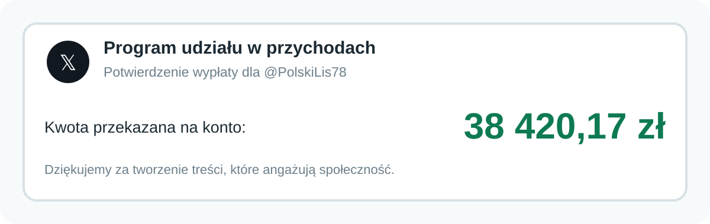

PolskiLis78 ✓@PolskiLis78 · 28 maj 2026
Aktywiści klimatyczni, kiedy ktoś pyta, kto zapłaci za ich rewolucję:
Zadanie indywidualne
Przejrzyj całą historię konta. Zwróć uwagę na tematykę wpisów, źródła, relacje z innymi użytkownikami, sposób wywoływania emocji oraz możliwy cel działania. Nie oceniaj profilu wyłącznie na podstawie zgodności lub niezgodności z poglądami autora.
Omówienie po odpowiedzi
To fikcyjna polska adaptacja mechanizmu pokazanego na profilu AlphaFox78. Właściciel konta jest człowiekiem, ukrywa swoją tożsamość i zarabia na treściach, które mają maksymalizować złość, kłótnię i czas spędzony na platformie. W scenariuszu szkoleniowym przyjął również 500 zł od pośrednika powiązanego z zagraniczną siecią wpływu, aby jako pierwszy opublikować spreparowane nagranie o rzekomym głosowaniu cudzoziemców.
Wieloletnia historia, trwały styl publikowania, osobisty wpis z Mazur i zdolność do zarabiania wskazują na konto prowadzone przez człowieka, nie automatycznego bota.
Treści są projektowane tak, by jedni je popierali, a drudzy odpowiadali z oburzeniem. Każda reakcja zwiększa zasięg i potencjalny przychód.
Ukryta tożsamość ogranicza ryzyko utraty pracy, relacji lub reputacji. Konto może pozwolić sobie na język, którego właściciel nie użyłby pod nazwiskiem.
Zagraniczna operacja nie musi prowadzić konta. Wystarczy zapłacić popularnemu, realnemu twórcy za pierwszą publikację, a fałsz zaczyna wyglądać jak organiczna treść.
Dlaczego to się opłaca?
Im bardziej prowokacyjna treść, tym więcej odpowiedzi, udostępnień i wyświetleń. Dla właściciela profilu obrażony przeciwnik może być równie wartościowy jak wierny fan.

Polski kontekst
Nie każda propaganda pochodzi z fałszywego konta. Pośrednik może zapłacić popularnemu twórcy za publikację filmu, memu lub „przecieku”, nie ujawniając prawdziwego zleceniodawcy. Realne konto daje materiałowi wiarygodność, zasięg i pozory spontanicznej reakcji użytkowników. Dlatego przy treściach wyborczych, migracyjnych i wojennych trzeba badać również relacje finansowe oraz kolejność rozpowszechniania.